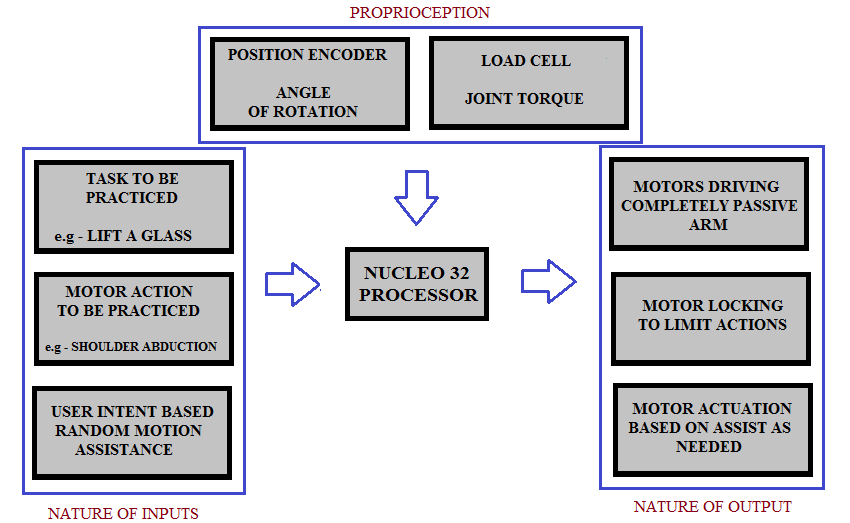
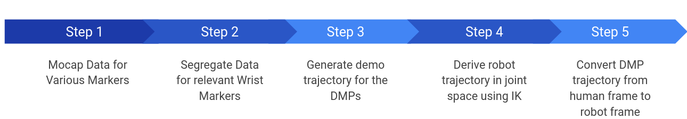
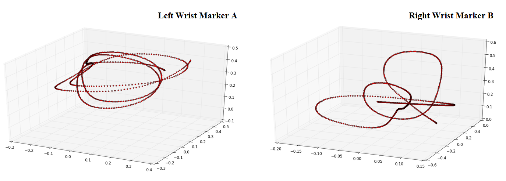
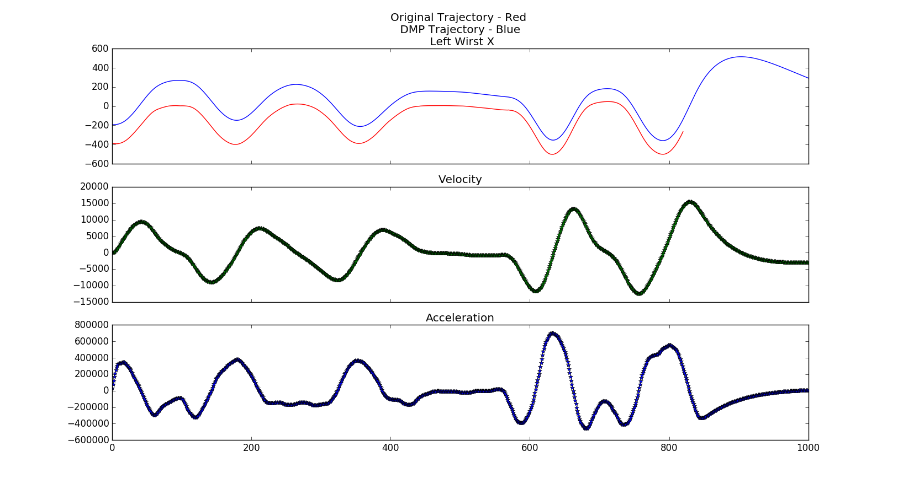
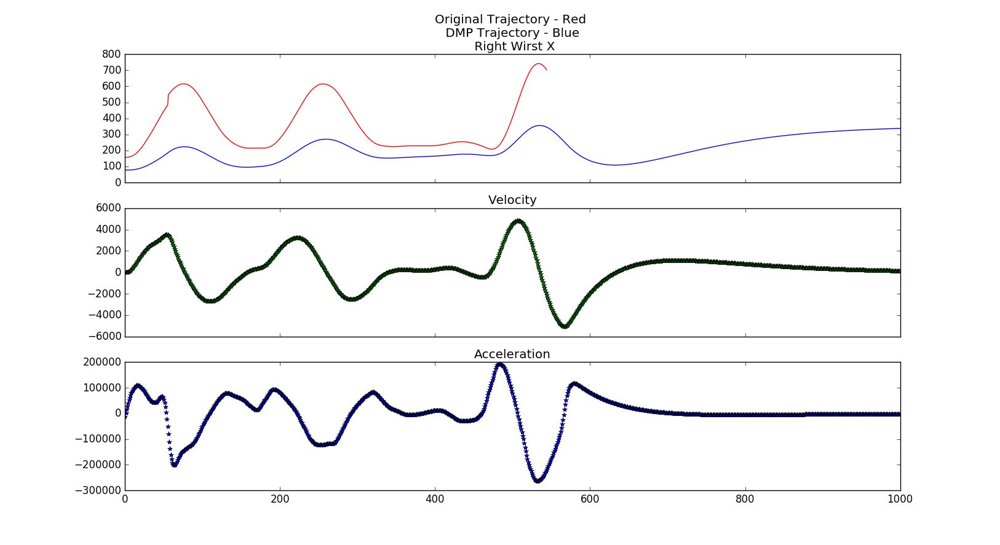
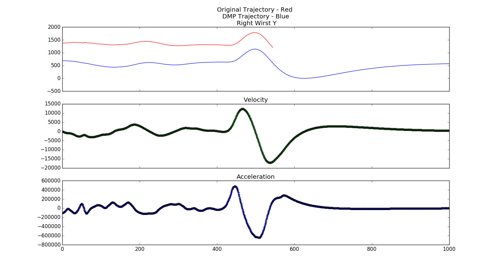
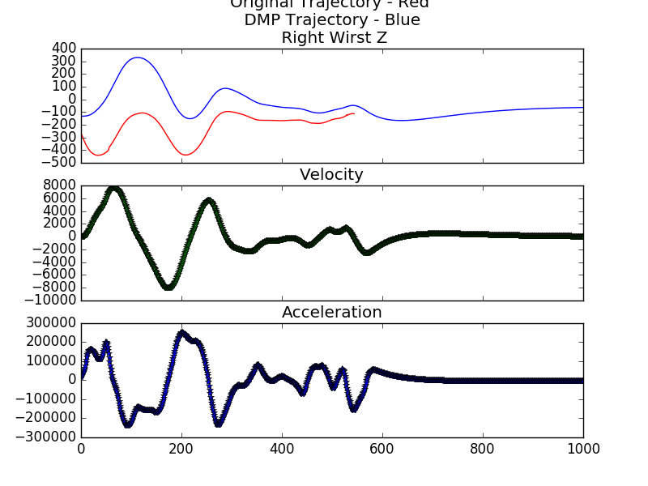

SEPTEMBER - DECEMBER 2017 | CIBR LAB | WPI | Prof. Zhi Jane Li
LINK TO COMPLETE PROJECT REPORT
OBJECTIVE
To build two robotic manipulators that work as end-effector type rehabilitation device capable of aiding upper body stroke patients to regain motion
I specifically worked on DMP based formulation of the robot path and conversion of the same from task-space to joint space trajectory
RESEARCH ASPECTS
• Vibrational feedback enabled end-effector gripper for haptic intimation
• Motion Capture was used to record regular exercises
• Dynamic Movement Primitives were used to formulate the trajectory for generalization
• Motion was interfaced with a two-paddle Pong game to make the exercises more interactive
• Excercise action trajectories for the wrist for shoulder abduction/rotation and elbow flexion were translated on to the rehabilation devices

METHODOLOGY
The model was made large enough to cover considerable 3D space for each exercise to be possible. Electronics used in the project included Nucleo 144 board for processing, 12-bit absolute magnetic encoder to sense joint position and velocity, 10 kgs payload load-cells at each joints to measure the torque and 22 kg-cm servo motors. Two motors were used at each joint to provide extra torque that could actually carry the stroke patient's arm around.
Software part of the project, basically has two modes of operation for arms based on the stage of recovery. First is user control mode, i.e with compliant control in this mode the patient can play the pong game , this mode can be used after significant recovery is done. Second is follow path mode, in which the arm is provided with predefined path, so it basically moves the patient's arm so the joints can get some recovery this mode can be used in the early stage of recovery. This uses the DMP generated trajectories.
The other sections included developing Compliant Controller, a gravity compensation system and implementing the vibrational feedback in the in-house developed game.

Trajectory generation pipeline
RESULTS
• Though slightly erroneous, satisfactory motion capture data was extracted for several upper body rehabilitation exercises
• DMP was successfully implemented in simulation as well as on the real robot
• Compliance control as well as gravity compensation was achieved
• Pong game with haptic feedback was achieved as well
• Non-constrained IK solvers, low communication speed, inefficient PID tuning and noisy sensors are the prominent current limitations among others
• Proof-of-concept working model was successfully achieved

Final trajectory in joint-space
Left Arm Trajectory simulation | Right Arm Trajectory simulation
Final Working model
GALLERY
   